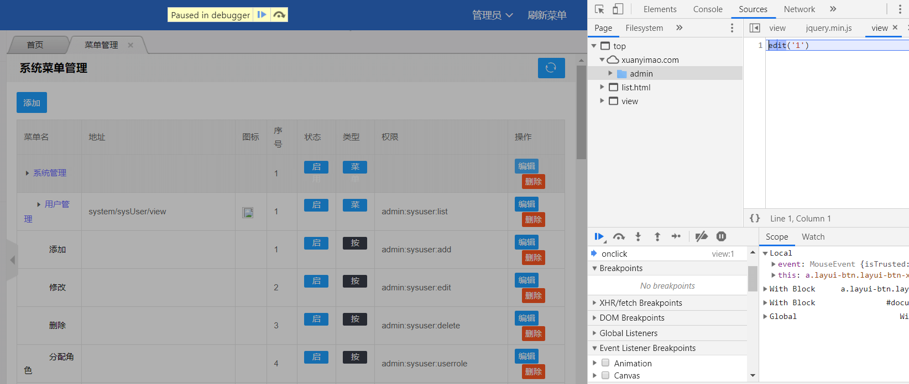
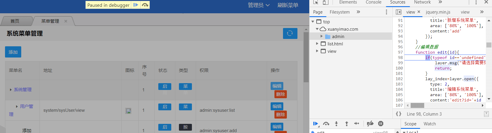

JxBrowser使用帮助
文档作于2020年10月
相关说明
在被Jcef的时不时卡死折磨之后，我开始了翻译JxBrowser文档的旅程（非手工翻译）。
接触了JxBrowser后，我被它强大的力量所折服，不得不说，比Jcef好太多，让我直接放弃了Jcef。最重要的一点，它不需要JCEF那么多花里胡哨的编译。(用作个人项目确实是个不错的选择)
JxBrowser是一个跨平台的Java库，允许将基于Google Chromium的Web浏览器组件集成到Java Swing / AWT / JavaFX应用程序中。使用JxBrowser，您可以将轻量级Swing / JavaFX组件嵌入到Java应用程序中，以显示现代网页，支持最新的Web标准，如HTML5，CSS3，JavaScript等。
这是他官网的描述：JxBrowser可以使用HTML + CSS + JavaScript构建Java桌面应用程序UI。这意味着您可以使用任何现代HTML5 UI工具包(如easyui,bootstrap)来构建用户界面友好的Java桌面应用程序。您可以解雇Swing/AWT开发人员，因为HTML + CSS + JavaScript开发人员可以构建Java应用程序的GUI，它大大降低了Java项目开发的成本。
（Swing/AWT开发工程师：？？？）
(注：以上翻译内容请自行对照谷歌翻译，不保证其真实性)
获取JxBrowser的最新版本：https://jxbrowser-support.teamdev.com/release-notes/2020/v6-24-3.html （英文看不懂？谷歌浏览器右键，翻译成中文）
截止本文发布日期，6.x最新版本是2020年3月16号的6.24.3。
相关资料均可在百度云盘获取（开发文档[英文原文档，带中文翻译的文档]，带中文翻译的帮助文档(来源：https://jxbrowser.support.teamdev.com/support/solutions)，所需的Jar(6.24.3)，Demo。因为我最早接触的是6.23.1，所以带中文翻译的开发文档是6.23.1版本）：https://pan.baidu.com/s/1P7gMI8-0Bi8aIDE1d4C0ng 提取码: k6xp --来自百度网盘超级会员v4的分享
开发文档用于写程序时查找类/方法的用法，帮助文档用于入门、进阶、删库跑路等。建议先把帮助文档看一遍，照着例子写一遍。
开源了个人项目供大家参考（需添加许可证信息才能正常运行，许可证怎样获得？百度一大堆。JxBrowser官网可以申请30天试用），功能和PowerOfLengedJcef差不多【含 脚本管理，代码模板生成器，JxBrowser帮助文档】：
github：https://github.com/lieyanfeimao/PowerOfLongedJxBrowser.git
码云：https://gitee.com/edadmin/PowerOfLongedJxBrowser.git
因为JxBrowser已经提供了详细的Demo，这里我没有像Jcef一样去写个Demo工程了。
本文使用的Jxbrowser版本是：jxbrowser-6.24.3
因为优秀，所以它并不免费，请自行想办法获取许可证。如果它能帮到你，而你也资金充裕，建议购买正版。（钱是个好东西）
优点：
完美支持各大视频网站的视频播放，页面流畅不卡死（不能说百分百），支持Java与JS交互，支持ajax数据监听。总之，牛的一匹。
我很喜欢这种JAVA和JS交互的方式，例如：var a=Java.test();
瑕疵：
个人觉得不友好的地方，对iframe页面操作不甚方便，使用开发者工具[Debug模式]需要连接谷歌服务器(因为防火墙在，连不上)，开发者工具很怪，操作没谷歌浏览器的方便。Jcef在这两点上做的就比较好。
另外，经过长时间沉淀，JxBrowser会在C盘下会生成大量缓存/数据文件，很容易撑爆磁盘。请参照帮助文档 文献资料(Documentation)>浏览器引擎(Browser Engine)>清除缓存(Clearing Cache) 进行处理
主要类介绍
先大概介绍一下常用的类，免得写代码的时候一脸懵逼（讲我用过的吧）。相关类具体的说明请查看开发文档。
Browser：浏览器主类，处理浏览器的相关操作，如执行JS、监听事件等等，是一个非常重要的类。当你对浏览器做一些设置，如监听事件、前进后退等，可查阅此类的文档。它位于：com.teamdev.jxbrowser.chromium
BrowserContext：描述浏览器实例的上下文。提供指向将存储Chromium数据文件（如cookie，历史记录，缓存）的目录的路径，并提供对上下文级别功能（如NetworkService）的访问。具有相同BrowserContext的两个Browser实例将共享会话cookie和缓存文件。这个类我在同时启动多个应用时用到，因为各个应用不能共用同一个数据文件目录，所以，我用它为应用分配不同的数据文件目录。
BrowserPreferences：浏览器实例和全局库首选项。设置浏览器的启动参数等。一般在程序启动时设置，也可以使用Browser的setPreferences()方法设置
NetworkService：提供对网络级功能的访问。这个类很有用，可以用它实现对网络请求的操作。我试了下，用了它后程序比较不稳定。
JS开头的类：对JS的相关处理
com.teamdev.jxbrowser.chromium：监听器，事件
com.teamdev.jxbrowser.chromium.dom：操作DOM对象的接口
com.teamdev.jxbrowser.chromium.swing：用于swing下的一些handler实现类，例如监听网页返回数据使用的是DefaultNetworkDelegate
官方Demo里面已经有了各种骚操作的用法，这里我只说些常用的和一些踩的坑。（官方Demo在哪？在百度云盘里）
右键菜单位置偏移
参照demo写完右键菜单，发现菜单位置与鼠标隔着一定的距离。因为很久以前在使用VB开发屏幕取色器时碰到过类似的问题，我猜测是win10屏幕缩放的问题（用win7系统的时候没碰到过这样的问题）。
桌面右键，选择“显示设置”，发现当前的缩放比例是125%，于是把坐标乘以125%，右键菜单位置正常。
之后尝试使用JAVA调用windows API去获取缩放比例，折腾了一阵，发现获取的屏幕DPI值是120，和我想要的125有点差距。（DPI是什么？自行百度）
由于对DPI的概念不熟，一直以为DPI就是屏幕缩放比例。后来偶然在百度上看到，不同的DPI对应不同的屏幕缩放比例，豁然开朗。
DPI is how scaling setting is implemented. Their relationship is:（dpi是如何实现缩放设置的。他们的关系如下：） 96 DPI = 100% scaling 120 DPI = 125% scaling 144 DPI = 150% scaling 192 DPI = 200% scaling
知道了这些，一切都好办了，不需要调用windows api，Java自带获取DPI的方法。
int dpi=Toolkit.getDefaultToolkit().getScreenResolution();
int scaling=100;
switch(dpi) {
case 120:
scaling=125;
break;
case 144:
scaling=150;
break;
case 192:
scaling=200;
break;
}
再用得到屏幕坐标乘以scaling除以100，使右键菜单在不同缩放比例的电脑上位置不偏移。
JS与JAVA代码交互
JS和Java交互可以说是软件的灵魂，JxBrowser调用Java方法很简单。参照官方Demo：
browser.addScriptContextListener(new ScriptContextAdapter() {
@Override
public void onScriptContextCreated(ScriptContextEvent event) {
Browser browser = event.getBrowser();
JSValue window = browser.executeJavaScriptAndReturnValue("window");
window.asObject().setProperty("java", new JavaObject());
}
});
这样你就可以使用Js随意调用Java类的方法和属性了，非常方便。ScriptContextAdapter用于接收JavaScript上下文事件，在页面JS脚本初始化和销毁时调用。
注意：Java方法的返回值是Java对象，不能像处理js对象那样去调用，而要以调用Java方法的形式去调用。比如你返回了一个 List<String>给js，你在js代码中想获取这个List的长度，用length是不行的，而要用size()。
public List<String> test(){...}
var list=Test.test();
错误：alert(list.length);
正确：alert(list.size());
建议在Java方法中把返回值转换成Json字符串再返回给Js，再在Js中JSON.parse(xx)将字符串转换成Js对象。
在js里面写java代码，看上去虽然很牛批，可能过段时间回过头来一看：这写的是什么鬼？混着写也容易写着写着把自己写懵了，不知道自己写的是js还是java。
不要尝试在js代码打印Java类对象。比如你加入了一个Java类对象：jsObject.setProperty("Test",new xxxx()); ，再执行如下js代码：alert(Test); 或者 console.log(Test); 效果自测。
根据Demo实现JS调用Java对象后，为了可以自动注入指定的Java类对象，不用每加一个Java类都去写一个 jsObject.setProperty(xxx,xxx)方法，我自定义了JsClass注解，采用了注解的方式去扫描所有包含JsClass注解的类，自动加载。
有个问题，我们一般会在 $(document).ready(function(){});里面调用Java方法初始化一些数据。在初始化时偶尔会抛出 XXX无效的错误，明明已经用setProperty设置了 XXX，可就是找不到。有时又不会报这个错。这个问题多出现在第一次启动软件时。(电脑配置越好，碰到的几率越小)
这里我推测是jsObject.setProperty和document加载是同步进行的。能找到是因为JAVA对象在document.ready()之前将Java对象加入了上下文。但大多数情况下，Java对象载入没这么快。官方文档说：如果您先注入/注册Java对象，再加载网页，则所有注册的Java对象将被破坏，并且无法在加载的网页的JavaScript中使用。
多次测试发现，第一个载入的 Java对象大概率不会出现无效的问题。所以建议只载入一个Java对象。
这里推荐两个方案：
1.只载入一个Java对象，Java对象的代码尽量简单。（说实话，这方案只能降低碰到JAVA对象未定义的几率，程序启动稍微一卡就找不到Java对象）【这里有个馊主意，如果Java对象未定义，重载页面】
2.不使用document.ready()这样的方法，定义一个公共的js函数，在网页框架加载完成后用Java调用。（没试，感觉可行）
方法总比问题多。
脚本注入技巧
注：仅适用于谷歌浏览器
1.获取页面鼠标单击事件调用的js。以下使用我自己的项目做示例，查找"编辑"按钮对应的JS
F12进入开发者工具，选择sources

展开 Event Listener Breakpoints，选中Mouse下的click，单击页面元素

按F11往下追踪，直到找到自己需要的js


找到js后，可以将js代码复制出来，封装成一个函数，再以脚本注入的方式注入到页面，调用该函数
2.调用指定元素的单击事件
在开发者工具下，用箭头找到指定元素，分析元素的id，class之类的信息，调用单击事件
示例：document.getElementById("xx").click();
建议：尽量使用原生js的方式调用
通过注解处理Js与Java交互
PowerOfLengedJxBrowser项目目前处于暂停状态，它是一个半成品，也不知什么时候再启动。
在做Java和Js交互时，需要写jsObject.setProperty("Test",new xxxx());这样的代码注入Java对象。
写一两个还好，写多了，不免有些麻烦。而且，一次注入多个对象，在启动时，很可能出现Js调用Java方法时，对象还没加载完成从而报错。于是，我通过注解设计了一个工具类去统一处理Java和Js交互。
在使用springmvc和springboot开发网站项目时，在Controller层的类上加上注解，我们就可以通过指定路径访问这个类，调用这个类的方法。在shiro中，加入权限注解，便可以实现控制对方法的访问。这便是注解的强大之处。
可参照PowerOfLengedJxBrowser项目阅读本文
设计思路：
1、定义注解
2、程序启动时，扫描注解类，创建类对象，保存到内存中
3、前端JS传递参数，调用对应的Java对象的方法
为了避免处理数据类型带来的不便，数据交互统一采用JSON，即JS传入JAVA的数据为JSON字符串，JAVA返回给JS的数据类型也是JSON字符串
定义注解
我定义了三个注解，JsClass、JsFunction、JsObject
JsClass作用于类，标识类的名称。类似于Spring中的@Controller
JsFunction作用于方法，标识方法名。前端JS通过JsFunction的名字调用这个方法
JsObject作用于JsClass生命的类对象，类似于Spring中的@Autowire。用的少
注解定义如下：
import java.lang.annotation.Documented;
import java.lang.annotation.ElementType;
import java.lang.annotation.Inherited;
import java.lang.annotation.Retention;
import java.lang.annotation.RetentionPolicy;
import java.lang.annotation.Target;
/**
* javascript类注解，程序启动时扫描器会扫描指定包下的包含JsClass注解的类
* jsname为前端公共JS函数调用java方法时的前缀名 如@JsClass(jsname="Test")，js调用形式为 Java.exec("Test.xx",{});
* @author liuming
*/
@Documented
@Target(ElementType.TYPE)
@Inherited
@Retention(RetentionPolicy.RUNTIME)
public @interface JsClass {
/**类实例名，可根据这个名称获取保存在扫描器的类实例对象*/
String name() default "";
/**JS函数名称前缀**/
String jspre() default "";
}
import java.lang.annotation.Documented;
import java.lang.annotation.ElementType;
import java.lang.annotation.Inherited;
import java.lang.annotation.Retention;
import java.lang.annotation.RetentionPolicy;
import java.lang.annotation.Target;
/**
* javascript函数注解，程序启动时扫描器会扫描指定包下的包含JsClass注解的类，收集包含JsFunction注解的方法
*
* @author liuming
*/
@Documented
@Target(ElementType.METHOD)
@Inherited
@Retention(RetentionPolicy.RUNTIME)
public @interface JsFunction {
/**函数名*/
String name();
/**本方法的调用描述，对应文档的“公共函数调用方式，需引入static/js/common.js”，暂为使用*/
String desc() default "";
}
import java.lang.annotation.Documented;
import java.lang.annotation.ElementType;
import java.lang.annotation.Inherited;
import java.lang.annotation.Retention;
import java.lang.annotation.RetentionPolicy;
import java.lang.annotation.Target;
/**
* @Description:自动注入扫描器的对象
* @author liuming
*/
@Documented
@Target(ElementType.FIELD)
@Inherited
@Retention(RetentionPolicy.RUNTIME)
public @interface JsObject {
}
注解扫描器设计
先细分一下设计。
1、需要考虑的事：注解对象如何保存，动态引入的jar包如何加载
我定义了一个叫AnnoRepertory的单例类，用于保存注解扫描器所需的配置和数据。
2、怎样知道声明了注解的类在哪里？
递归扫描整个项目肯定是下下策。我们可以主动传入包名，告知程序要扫描哪些包，加速程序启动速度。这里我在AnnoRepertory中定义一个属性做配置
3、我们可能会将某些模块的代码打包成jar或者引入第三方jar，它们该怎么处理？
我好高骛远的考虑可以将模块以jar包的形式导入，类似于插件，目前方案不完善。这里我在AnnoRepertory中定义一个属性，保存需要动态引入的jar包
4、声明注解的类对象和方法该怎样保存？
因为类对象在加载后只产生了一个对象，类似单例，我用List去保存。类中的方法则是用Map形式，键名为 类对象的jspre+方法的name。比如JS调用"Index.test"，程序直接去Map中查找是否存在这个键，存在则调用，不存在则告诉JS没有这个方法。我定义了AnnoClass和AnnoMethod去保存类和方法的相关信息。
import java.util.List;
import java.util.Map;
/**
* @Description:注解仓库对象
* @author liuming
*/
public class AnnoRepertory {
private final static AnnoRepertory annoRepertory=new AnnoRepertory();
private AnnoRepertory() {}
/**
* 获取注解仓库实例
* @return
*/
public static AnnoRepertory getInstance() {
return annoRepertory;
}
/** 注解扫描包配置，多个包以;号隔开 */
private String scannerPackage;
/**引入的jar文件列表*/
private List<String> extraJars;
/** 注解类对象集合 */
private List<AnnoClass> annoClassList;
/** 方法集合 */
private Map<String,AnnoMethod> methodMap;
/**
* 方法集合
* @return methodMap
*/
public Map<String, AnnoMethod> getMethodMap() {
return methodMap;
}
/**
* 设置 方法集合
* @param methodMap 方法集合
*/
public void setMethodMap(Map<String, AnnoMethod> methodMap) {
this.methodMap = methodMap;
}
/**
* 注解类对象集合
* @return annoClassList 注解类对象集合
*/
public List<AnnoClass> getAnnoClassList() {
return annoClassList;
}
/**
* 设置 注解类对象集合
* @param annoClassList 注解类对象集合
*/
public void setAnnoClassList(List<AnnoClass> annoClassList) {
this.annoClassList = annoClassList;
}
/**
* 获取注解扫描包配置，多个包以;号隔开
* @return scannerPackage 注解扫描包配置，多个包以;号隔开
*/
public String getScannerPackage() {
return scannerPackage;
}
/**
* 设置注解扫描包配置，多个包以;号隔开
* @param scannerPackage 注解扫描包配置，多个包以;号隔开
*/
public void setScannerPackage(String scannerPackage) {
this.scannerPackage = scannerPackage;
}
/**
* 获取引入的jar文件列表
* @return extraJars 引入的jar文件列表
*/
public List<String> getExtraJars() {
return extraJars;
}
/**
* 设置 引入的jar文件列表
* @param extraJars 引入的jar文件列表
*/
public void setExtraJars(List<String> extraJars) {
this.extraJars = extraJars;
}
/* (non-Javadoc)
* @see java.lang.Object#toString()
*/
@Override
public String toString() {
return "AnnoRepertory [scannerPackage=" + scannerPackage + ", annoClassList=" + annoClassList + "]";
}
}
/**
* @Description:注解类对象
* @author liuming
*/
public class AnnoClass {
/**类文件对象*/
private Class<?> cls;
/**类实例对象*/
private Object obj;
/**类实例名称，如果注解未指定，则用类名（小写开头）*/
private String name;
/**js函数名前缀，如果未指定，不使用前缀*/
private String jspre;
/**完整类名，包名.类名*/
private String clsName;
/**
* 获取类文件对象
* @return cls 类文件对象
*/
public Class<?> getCls() {
return cls;
}
/**
* 设置 类文件对象
* @param cls 类文件对象
*/
public void setCls(Class<?> cls) {
this.cls = cls;
}
/**
* 获取 类实例对象
* @return obj 类实例对象
*/
public Object getObj() {
return obj;
}
/**
* 设置 类实例对象
* @param obj 类实例对象
*/
public void setObj(Object obj) {
this.obj = obj;
}
/**
* 获取 类实例名称，如果注解未指定，则用类名（小写开头）
* @return name 类实例名称，如果注解未指定，则用类名（小写开头）
*/
public String getName() {
return name;
}
/**
* 设置 类实例名称，如果注解未指定，则用类名（小写开头）
* @param name 类实例名称，如果注解未指定，则用类名（小写开头）
*/
public void setName(String name) {
this.name = name;
}
/**
* 获取 完整类名，包名.类名
* @return clsName 完整类名，包名.类名
*/
public String getClsName() {
return clsName;
}
/**
* 设置 完整类名，包名.类名
* @param clsName 完整类名，包名.类名
*/
public void setClsName(String clsName) {
this.clsName = clsName;
}
/**
* 获取 js函数名前缀，如果未指定，不使用前缀
* @return jspre js函数名前缀，如果未指定，不使用前缀
*/
public String getJspre() {
return jspre;
}
/**
* 设置 js函数名前缀，如果未指定，不使用前缀
* @param jsname js函数名前缀，如果未指定，不使用前缀
*/
public void setJspre(String jspre) {
this.jspre = jspre;
}
/* (non-Javadoc)
* @see java.lang.Object#toString()
*/
@Override
public String toString() {
return "AnnoClass [cls=" + cls + ", obj=" + obj + ", name=" + name + ", clsName=" + clsName+", jspre="+jspre + "]";
}
public AnnoClass() {}
/**
* @param cls 类文件对象
* @param obj 类实例对象
* @param name 类实例名称，如果注解未指定，则用类名（小写开头）
*/
public AnnoClass(Class<?> cls, Object obj, String name) {
super();
this.cls = cls;
this.obj = obj;
this.name = name;
}
/**
* @param cls 类文件对象
* @param obj 类实例对象
* @param name 类实例名称，如果注解未指定，则用类名（小写开头）
* @param clsName 完整类名，包名.类名
*/
public AnnoClass(Class<?> cls, Object obj, String name, String clsName) {
super();
this.cls = cls;
this.obj = obj;
this.name = name;
this.clsName = clsName;
}
/**
*
* @param cls 类文件对象
* @param obj 类实例对象
* @param name 类实例名称，如果注解未指定，则用类名（小写开头）
* @param clsName 完整类名，包名.类名
* @param jsname js对象名，如果未指定，浏览器不注入此JAVA对象
*/
public AnnoClass(Class<?> cls, Object obj, String name, String clsName,String jspre) {
super();
this.cls = cls;
this.obj = obj;
this.name = name;
this.clsName = clsName;
this.jspre=jspre;
}
}
import java.lang.reflect.Method;
import java.util.List;
/**
* @Description:注解方法对象
* @author liuming
*/
public class AnnoMethod {
/**方法对象*/
private Method method;
/**方法注释*/
private String desc;
/**类对象*/
private AnnoClass annoClass;
/** 方法参数对象列表 */
private List<MethodParam> methodParam;
/**
* method
* @return method
*/
public Method getMethod() {
return method;
}
/**
* 设置 method
* @param method method
*/
public void setMethod(Method method) {
this.method = method;
}
/**
* annoClass
* @return annoClass
*/
public AnnoClass getAnnoClass() {
return annoClass;
}
/**
* 设置 annoClass
* @param annoClass annoClass
*/
public void setAnnoClass(AnnoClass annoClass) {
this.annoClass = annoClass;
}
/**
* methodParam
* @return methodParam
*/
public List<MethodParam> getMethodParam() {
return methodParam;
}
/**
* 设置 methodParam
* @param methodParam methodParam
*/
public void setMethodParam(List<MethodParam> methodParam) {
this.methodParam = methodParam;
}
/**
* 获取 方法注释
* @return desc 方法注释
*/
public String getDesc() {
return desc;
}
/**
* 设置 方法注释
* @param desc 方法注释
*/
public void setDesc(String desc) {
this.desc = desc;
}
/**
* @param method
* @param desc
* @param annoClass
* @param methodParam
*/
public AnnoMethod(Method method, String desc, AnnoClass annoClass, List<MethodParam> methodParam) {
super();
this.method = method;
this.desc = desc;
this.annoClass = annoClass;
this.methodParam = methodParam;
}
/**
*
*/
public AnnoMethod() {
super();
}
/**
* @param method
* @param annoClass
* @param methodParam
*/
public AnnoMethod(Method method, AnnoClass annoClass, List<MethodParam> methodParam) {
super();
this.method = method;
this.annoClass = annoClass;
this.methodParam = methodParam;
}
/**
* @param method
* @param annoClass
*/
public AnnoMethod(Method method, AnnoClass annoClass) {
super();
this.method = method;
this.annoClass = annoClass;
}
/* (non-Javadoc)
* @see java.lang.Object#toString()
*/
@Override
public String toString() {
return "AnnoMethod [method=" + method + ", annoClass=" + annoClass + ", methodParam=" + methodParam + "]";
}
}
/**
* @Description: 方法参数
* @author liuming
*/
public class MethodParam {
/**参数类型*/
private Class<?> cls;
/**参数名*/
private String name;
/**
* cls
* @return cls
*/
public Class<?> getCls() {
return cls;
}
/**
* 设置 cls
* @param cls cls
*/
public void setCls(Class<?> cls) {
this.cls = cls;
}
/**
* name
* @return name
*/
public String getName() {
return name;
}
/**
* 设置 name
* @param name name
*/
public void setName(String name) {
this.name = name;
}
/**
*
*/
public MethodParam() {
super();
}
/**
* @param cls
* @param name
*/
public MethodParam(Class<?> cls, String name) {
super();
this.cls = cls;
this.name = name;
}
/* (non-Javadoc)
* @see java.lang.Object#toString()
*/
@Override
public String toString() {
return "MethodParam [cls=" + cls + ", name=" + name + "]";
}
}
完成以上的操作，我们定义好了所需的数据结构。
接下来，开始写扫描程序，加载所需数据。获取方法参数名用到了spring的LocalVariableTableParameterNameDiscoverer
/**
* @Description: 注解扫描器
* 一瓶伏特加，狗熊都敢X
* @author liuming
*/
public class AnnotationScanner {
static URLClassLoader urlClassLoader= (URLClassLoader) ClassLoader.getSystemClassLoader();
/**
* Description:注解扫描入口
* @author:liuming
* @since 2017-12-4
* @return void
* @throws ScannerPackageNotFoundException
* @throws IllegalAccessException
* @throws IllegalArgumentException
* @throws UnsupportedEncodingException
* @throws ClassNotFoundException
* @throws InstantiationException
*/
public static void scannerMain() throws ScannerPackageNotFoundException, IllegalArgumentException, IllegalAccessException, UnsupportedEncodingException, InstantiationException, ClassNotFoundException{
AnnoRepertory aRepertory=AnnoRepertory.getInstance();
if(StringUtils.isBlank(aRepertory.getScannerPackage())){
throw new ScannerPackageNotFoundException("扫描路径未配置");
}
//解析所有需要扫描的包，获取类注解
getScannerPackages(aRepertory.getScannerPackage());
//扫描注解类中的所有方法
analysisAnnoMethodField();
}
/**
* Description:获取所有需要扫描的包列表
* @author:liuming
* @since 2017-12-4
* @param packagePath 扫描包路径
* @throws UnsupportedEncodingException
* @throws IllegalAccessException
* @throws InstantiationException
* @throws ClassNotFoundException
*/
public static void getScannerPackages(String packagePath) throws UnsupportedEncodingException, ClassNotFoundException, InstantiationException, IllegalAccessException{
//获取一共要扫描多少包
String[] packages=packagePath.split(";");
//获取所有需要扫描的包
List<String> fpg=new ArrayList<String>();
for(int i=0;i<packages.length;i++){
if(StringUtils.isBlank(packages[i])) continue;
fpg.add(packages[i].replace(".","/"));
}
getScannerPackage(fpg);
}
/**
* Description:递归获取所有的包，将*号转换成具体的包名，遍历里面的类
* @author:liuming
* @since 2017-12-4
* @param pgs
* @return List<String>
* @throws UnsupportedEncodingException
* @throws ClassNotFoundException
* @throws IllegalAccessException
* @throws InstantiationException
*/
public static void getScannerPackage(List<String> pgs) throws UnsupportedEncodingException, ClassNotFoundException, InstantiationException, IllegalAccessException{
List<AnnoClass> annoClassList=new ArrayList<AnnoClass>();
/***********************扫描指定jar包***********************/
//获取包名的正则，用于jar扫描时做目录匹配
List<String> regPgs=new ArrayList<String>();
for(String pg:pgs) {
regPgs.add(getPkgReg(pg));
}
List<String> jarList = AnnoRepertory.getInstance().getExtraJars();
for(String jar:jarList) {
try {
JarFile jarFile=new JarFile(jar);
Enumeration<JarEntry> entry = jarFile.entries();
JarEntry jarEntry;
while (entry.hasMoreElements()) {
jarEntry = entry.nextElement();
String name = jarEntry.getName();
if (name.charAt(0) == '/') {
name=name.substring(1);
}
for(String reg:regPgs) {
if(name.matches(reg)) {//匹配成功
System.out.println(jar+"扫描的类："+name);
// System.out.println(name.matches(".*?\\$\\d+.*?"));
if(name.toLowerCase().endsWith(".class") && !jarEntry.isDirectory()) {//如果是class文件，加载
AnnoClass ac = loadJsClass(name.replace("/",".").substring(0,name.length()-6));
if(ac!=null) annoClassList.add(ac);
}
break;
}
}
}
jarFile.close();
} catch (IOException e) {
// e.printStackTrace();
System.out.println(jar+"文件加载失败,跳过扫描...");
}
}
/***********************扫描未在jar包的class**********************/
for(String pg:pgs){
analysisAnnoClass(pg,annoClassList);
}
AnnoRepertory.getInstance().setAnnoClassList(annoClassList);
}
/**
* 扫描非jar包内的class，工程的bin目录
* @author:liuming
* @param pg
* @param annoClassList
* @throws UnsupportedEncodingException
* @throws ClassNotFoundException
* @throws InstantiationException
* @throws IllegalAccessException
*/
public static void analysisAnnoClass(String pg,List<AnnoClass> annoClassList) throws UnsupportedEncodingException, ClassNotFoundException, InstantiationException, IllegalAccessException {
int sindex=pg.indexOf("*");
String pgPath=pg;
if(sindex!=-1){//如果存在*号
pgPath=pg.substring(0,sindex);
}
String protocol ="";//协议名称
String filePath ="";//资源物理路径
File file;//文件对象
URL url = urlClassLoader.getResource(pgPath);
if(url==null){
return;
}
// 得到协议的名称
protocol = url.getProtocol();
if("file".equals(protocol)){
filePath = URLDecoder.decode(url.getFile(), "UTF-8");
file=new File(filePath);
if(file.isDirectory()){//如果是目录才处理
if(pg.indexOf("*")!=-1) {//获取当前包下所有目录，继续向下探查
for(File f:file.listFiles()){
if(f.isDirectory()){
analysisAnnoClass(pgPath+f.getName()+pg.substring(sindex+1), annoClassList);
}
}
return;
}
//获取所有的class文件
File[] fList=file.listFiles(new FileFilter() {
@Override
public boolean accept(File f) {
// System.out.println("扫描的文件:"+f.getAbsolutePath());
return !f.isDirectory() && f.getName().endsWith(".class");
}
});
if(fList!=null){
for(File f:fList){
AnnoClass ac = loadJsClass((pg+"/"+f.getName().substring(0,f.getName().length()-6)).replace("/","."));
if(ac!=null) annoClassList.add(ac);
}
}
}
}
}
/**
* 扫描注解文件
* @author:liuming
* @param clsName Class名
* @return
* @throws ClassNotFoundException
* @throws InstantiationException
* @throws IllegalAccessException
*/
public static AnnoClass loadJsClass(String clsName) throws ClassNotFoundException, InstantiationException, IllegalAccessException {
Class<?> cls=Class.forName(clsName);
// System.out.println("处理的类文件："+cls);
//获取类上的JsClass注解
JsClass jsClass=cls.getAnnotation(JsClass.class);
if(jsClass!=null) {
System.out.println("扫描到的注解类:"+cls+"..."+clsName);
// System.out.println("注解name:"+jsClass.name());
String className=jsClass.name();
if(StringUtils.isBlank(className)) {
// System.out.println("扫描到的注解>>"+cls.getName()); // 包名.类名
className=cls.getSimpleName();
className=className.substring(0,1).toLowerCase()+className.substring(1);
// System.out.println(className);
}
return new AnnoClass(cls, cls.newInstance(), className,cls.getName(),jsClass.jspre());
}
return null;
}
/**
* 获取包名的正则表达式
* @author:liuming
* @param pkg
* @return
*/
public static String getPkgReg(String pkg) {
if(!pkg.endsWith("*") && !pkg.endsWith("/")) {
pkg+="/";
}
if(pkg.endsWith("*")) {
pkg=pkg.substring(0,pkg.length()-1)+"[^/]*?/[^/]*?";
}else if(pkg.endsWith("/")) {
pkg=pkg+"[^/]*?";
}
pkg=pkg.replace("/*/", "/[^/]*?/");
return pkg;
}
/**
* 解析注解类中的方法
* @author:liuming
* @throws IllegalAccessException
* @throws IllegalArgumentException
*/
public static void analysisAnnoMethodField() throws IllegalArgumentException, IllegalAccessException {
List<AnnoClass> annoClassList=AnnoRepertory.getInstance().getAnnoClassList();
Map<String,AnnoMethod> methodMap=new HashMap<String,AnnoMethod>();
if(annoClassList!=null && !annoClassList.isEmpty()) {
for(AnnoClass annoClass:annoClassList) {
// System.out.println(annoClass);
//为类中含有@JsObject注解的字段注入实例，只能注入有@JsClass注解的对象，如果@JsObject标注的字段不是注解类对象集合中，抛出注入失败异常
Field[] fields=annoClass.getCls().getDeclaredFields();
if(fields.length>0) {
for(int i=0;i<fields.length;i++) {
fields[i].setAccessible(true);
JsObject jsObject=fields[i].getAnnotation(JsObject.class);
if(jsObject!=null) {
// System.out.println(fields[i].getGenericType().getTypeName());
//为属性赋值，以后根据需要做优化
for(AnnoClass ac:annoClassList) {
if(fields[i].getGenericType().getTypeName().equals(ac.getClsName())) {//如果与列表的类名一致
fields[i].set(annoClass.getObj(), ac.getObj());
break;
}
}
}
}
}
//解析含有@JsFunction注解的方法，获取方法中的参数
Method[] methods=annoClass.getCls().getDeclaredMethods();
if(methods.length>0) {
for(int i=0;i<methods.length;i++) {
methods[i].setAccessible(true);
JsFunction jsFunction=methods[i].getAnnotation(JsFunction.class);
if(jsFunction!=null) {//方法含有jsFunction注解
// System.out.println(jsFunction.name());//函数名
// System.out.println("方法名:"+methods[i].getName());//方法名，不需要
AnnoMethod annoMethod=new AnnoMethod(methods[i], annoClass);
//获取方法的所有参数
Class<?>[] paramClass=methods[i].getParameterTypes();
if(paramClass.length>0) {//存在参数
List<MethodParam> paramList=new ArrayList<MethodParam>();
//使用spring LocalVariableTableParameterNameDiscoverer获取参数名
ParameterNameDiscoverer parameterNameDiscoverer = new LocalVariableTableParameterNameDiscoverer();
String[] pn=parameterNameDiscoverer.getParameterNames(methods[i]);
for(int j=0;j<paramClass.length;j++) {
// System.out.println(paramClass[j]+"...."+pn[j]);
paramList.add(new MethodParam(paramClass[j], pn[j]));
}
annoMethod.setMethodParam(paramList);
}
String funcName=(StringUtils.isNotBlank(annoClass.getJspre())?annoClass.getJspre()+".":"") + jsFunction.name();
System.out.println("扫描到的JS函数："+funcName);
annoMethod.setDesc(jsFunction.desc());
methodMap.put(funcName,annoMethod);
}
}
}
}
}
AnnoRepertory.getInstance().setMethodMap(methodMap);
}
/**
* 根据JsClass注解的name获取扫描器保存的实体对象
* @author:liuming
* @param name
* @return
*/
public static Object getJsClassInstance(String name) {
List<AnnoClass> annoClassList = AnnoRepertory.getInstance().getAnnoClassList();
if(annoClassList!=null && !annoClassList.isEmpty()) {
for(AnnoClass ac:annoClassList) {
if(name.equals(ac.getName())) {
return ac.getObj();
}
}
}
return null;
}
}
接下来写JS和Java交互的入口程序。逻辑很简单，根据传入的函数名找到要调用的方法，先把传入的参数转换成Json对象，再转换成方法参数对应的类型。
/**
* @Description: JS与JAVA交互的处理类
* 为何使用此类做JS交互？
* 多次测试发现，在浏览器创建完window.document后调用JsObject的setProperty设置Java对象，在$(document).ready();方法中有时会出现对象未定义
* 推测document加载与将Java对象载入JS上下文是同步进行的
* 所以使用此类做JS与JAVA交互的总入口，尽量避免对象未定义的事情发生。另一个，也是为了方便js处理数据。
* 网页上调用示例：Java.exec("test",JSON.stringify({data:\"测试\"})); 或者 Java.exec("test",{data:\"测试\"});
* 绕了一圈，又绕回来了
* @author liuming
*/
public class PoljbJsToJava {
//gson对象
Gson gson=new GsonBuilder().disableHtmlEscaping().serializeNulls().create();
/**
* 调用扫描到的Java方法
* @author:liuming
* @param funcName 函数名
* @return
*/
public String exec(String funcName) {
return exec(funcName, "");
}
/**
* 调用扫描到的Java方法
* @author:liuming
* @param funcName 函数名
* @param jsObject 前端传入的JS对象
* @return
*/
public String exec(String funcName,JSObject jsObject) {
// System.out.println(jsObject.toJSONString());
return exec(funcName, jsObject.toJSONString());
}
/**
* 调用扫描到的Java方法
* @author:liuming
* @param funcName 函数名
* @param jsObject 前端传入的JSON字符串
* @return
*/
public String exec(String funcName,String params) {
System.out.println("函数名："+funcName);
System.out.println("参数："+params);
try {
AnnoMethod annoMethod = AnnoRepertory.getInstance().getMethodMap().get(funcName);
if(annoMethod==null) {
System.out.println("函数未在Java代码中声明，调用失败!");
return gson.toJson(Message.error("函数未在Java代码中声明，调用失败!"));
}
// System.out.println(annoMethod.getMethod().getReturnType());
JsonObject jsonObject=null;
if(StringUtils.isNotBlank(params)) {
JsonParser jp=new JsonParser();
jsonObject=jp.parse(params).getAsJsonObject();
}
//获取方法的参数列表
List<MethodParam> methodParam = annoMethod.getMethodParam();
Method method=annoMethod.getMethod();
method.setAccessible(true);
Object result=null;
if(methodParam==null || methodParam.isEmpty()) {//不需要传递参数
result=method.invoke(annoMethod.getAnnoClass().getObj());
// System.out.println(gson.toJson(result));
}else {//对传入的参数进行处理
Object[] objs=new Object[methodParam.size()];
//遍历参数数组是否存在ho类型的参数，标记位置
for(int i=0;i<methodParam.size();i++) {
MethodParam mp=methodParam.get(i);
if(jsonObject!=null && jsonObject.get(mp.getName())!=null) {
objs[i]=gson.fromJson(jsonObject.get(mp.getName()), mp.getCls());
}else {
objs[i]=null;
}
}
result=method.invoke(annoMethod.getAnnoClass().getObj(),objs);
}
return gson.toJson(result);
}catch(Exception e) {
return gson.toJson(Message.error("程序异常:<br/>"+ToolUtil.getExceptionMessage(e)+"<br/><font color='red'>[一位优秀的程序员准备甩锅](๑＞ڡ＜)✿ </font>"));
}
}
}
最后，在脚本初始化动作执行时，载入此Java对象，示例类：
public class XymScriptContextAdapter extends ScriptContextAdapter {
/* (non-Javadoc)
* @see com.teamdev.jxbrowser.chromium.events.ScriptContextAdapter#onScriptContextCreated(com.teamdev.jxbrowser.chromium.events.ScriptContextEvent)
*/
@Override
public void onScriptContextCreated(ScriptContextEvent event) {
System.out.println("注入公共脚本!");
Browser browser = event.getBrowser();
JSValue value = browser.executeJavaScriptAndReturnValue("window");
value.asObject().setProperty("Java", new PoljbJsToJava());
}
}
在创建Browser对象时设置此适配器
browser.addScriptContextListener(new XymScriptContextAdapter());
写个方法，在前端HTML页面测试
代码：略，言之有理即可
PowerOfLongedJxBrowser文档
PowerOfLongedJxBrowser是一个不成熟的JxBrowser项目，在一些方面我自认为不够方便，不过现在已经可以满足我的大部分要求。我也不知道会不会继续维护它，如果有空闲时间的话——可能会吧。 (有些功能想做，一直没时间做)
如果你想使用JxBrowser开发自己的应用，你可以参考JxBrowser的相关文档，你也可以参考PowerOfLongedJxBrowser。
项目相关帮助
必读
本项目使用的是JxBrowser 6.24.3
JxBrowser是一个不免费的优秀项目。本项目没有包含许可证信息，意味着你导入到eclipse后并不能直接运行。请自行获取许可证。
JxBrowser官网：https://www.teamdev.com/jxbrowser
请支持正版，支持他人劳动成果！
目录说明
src：JAVA代码目录
app：HTML文件存放目录，可以理解为应用目录。各个应用的HTML部分应以单个目录的形式存放在这里。
bin：class文件目录
data：数据储存目录，以应用ID生成相应的目录。data数据以json格式数据储存，方便修改
lib：JAR文件目录
scp：脚本文件目录，对应首页的脚本管理
功能模块说明
应用管理： 可视化界面管理应用，实现应用安装与打包，较鸡肋，也许后面会完善
脚本管理： 管理项目的脚本文件，设置脚本注入路径，替换方式等
代码模板生成器： 以模板的形式自动生成代码文件，也可以用于生成其他文件
JxBrowser帮助文档： JxBrowser帮助文档，含本人写的教程和带中文翻译的JxBrowser文档和Jxbrowser帮助文档， 可以到项目目录 app\helpdoc，用浏览器打开index.html 查看
创建一个JS与JAVA交互的接口
在com.xuanyimao.poljb下面创建一个自己的包，比如：com.xuanyimao.polj.test，在下面继续创建一个jsimpl包：com.xuanyimao.polj.test.jsimpl。
新建一个普通JAVA类，加上注解 @JsClass ，创建一个方法，加上注解：@JsFunction(name="test1")。里面随便写一些代码。可参考各jsimpl包下的代码。
前台HTML页面引入 app\static\js\common.js，执行类似形式的代码 var msg=execJava("test1",{data:data}); ，建议直接在index.html做测试，可参考index.html中注释掉的测试代码。
common.js中的execJava函数弹层使用的是easyui，如果想换成其他ui，请参照该代码进行改写。
从StartupApp中可以看出，程序在启动时扫描了指定目录下的jsimpl包，如果你的应用想要用其他的包名，请在这里指定，或在打包成应用包的时候指定扫描的包名。
有时候你的数据可能无法被Gson解析成相应参数，遇到这种情况，建议把参数放到一个Java实体类里面。参考com.xuanyimao.poljb.index.jsimpl.IndexJs的createInstallPkg方法
注解说明：
@JsClass 表示这个类是个JS接口类
@JsFunction 标明前台该如何调用这个JAVA方法，name属性是JS调用时使用的名称
@JsObject 可用此注解动态注入@JsClass的类对象，不建议使用，建议用：AnnotationScanner.getJsClassInstance(JsClass名)
如果阁下需要了解注解解析器的设计思路，请查阅帮助文档 “通过注解处理Js与Java交互”及之后的章节
代码相关说明
因为PowerOfLongedJxBrowser的作者拥有良好的编码规范，几乎所有方法都有注释，所以，你可以尽情的研究源码。PowerOfLongedJxBrowser的核心代码都在com.xuanyimao.poljb.index 下。
不要纳闷我为什么没有new MainFrame()，窗口却启动了。注解扫描器扫描时会自动实例化一个对象到内存中。它会被打开的原因就是因为注解扫描器扫描了它，而它有JsClass这个注解。
com.xuanyimao.poljb.StartupApp
项目启动类，加载配置，扫描JS接口，启动窗口
com.xuanyimao.poljb.index.MainFrame
主窗口类，从这里初始化JxbManager数据
com.xuanyimao.polj.index.JxbManager
JxBrowser对象管理类，和浏览器相关的事件都在里面，例如创建窗口，关闭窗口
com.xuanyimao.poljb.index.scanner.AnnotationScanner
注解扫描器主类，扫描注解，执行JS和Java代码交互
com.xuanyimao.poljb.index.PoljbJsToJava
Js与Java交互的总入口，此工具类会被加载到Browser的JS上下文中。JS访问Java程序，经过此入口程序，程序对JS数据进行分析，从扫描器获取对应的对象并执行相应的方法。示例：com.xuanyimao.poljb.index.jsimpl.CommonFunction中的chooseFile
com.xuanyimao.polj.index.util.ZipUtil
文件压缩工具类
com.xuanyimao.polj.index.util.ToolUtil
乱七八糟的工具类
二次开发规范
如果你想使用PowerOfLongedJxBrowser直接开发，我建议遵循以下规则：
尽量不修改 com.xuanyimao.poljb 下的代码，自立门户，创建自己的包。在StratupApp中添加自己的包的扫描路径。这样是为了防止我万一吃饱了没事干去更新一个比较好的新版本，你手足无措。
src下的包名和app下的包名与你的应用ID保持一致，这样方便你自己开发
JS交互接口的名字以 应用ID.方法名 的形式，以免和我的产生冲突。
总之，你按规定，我随意。
版本记录
v1.0 PowerOfLongedJcef，虽然抛弃它很不舍，但没办法
v2.0 更名PowerOfLongedJxBrowser，修改代码以适应JxBrowser